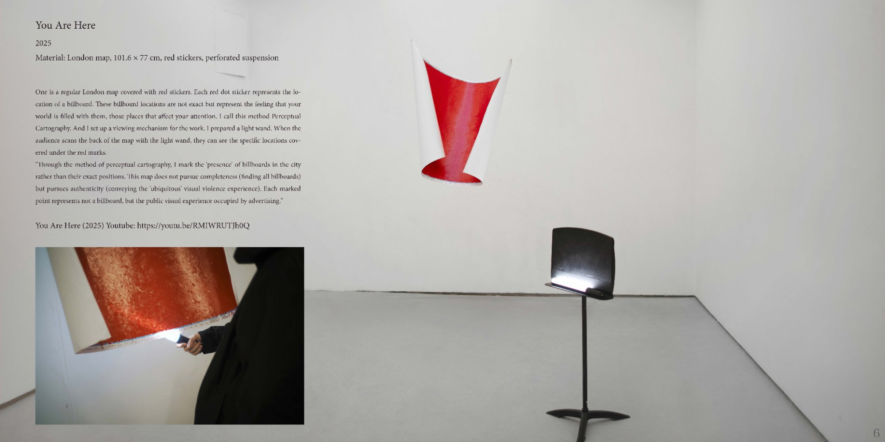
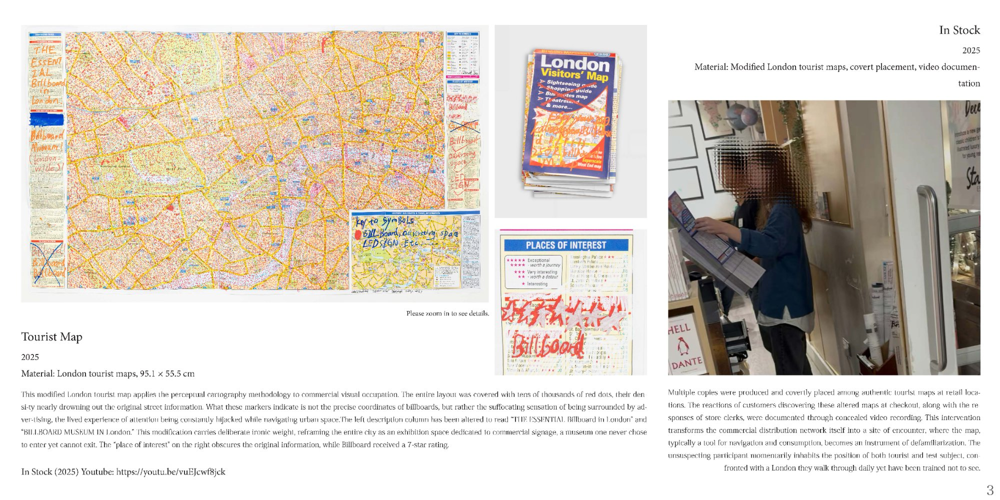
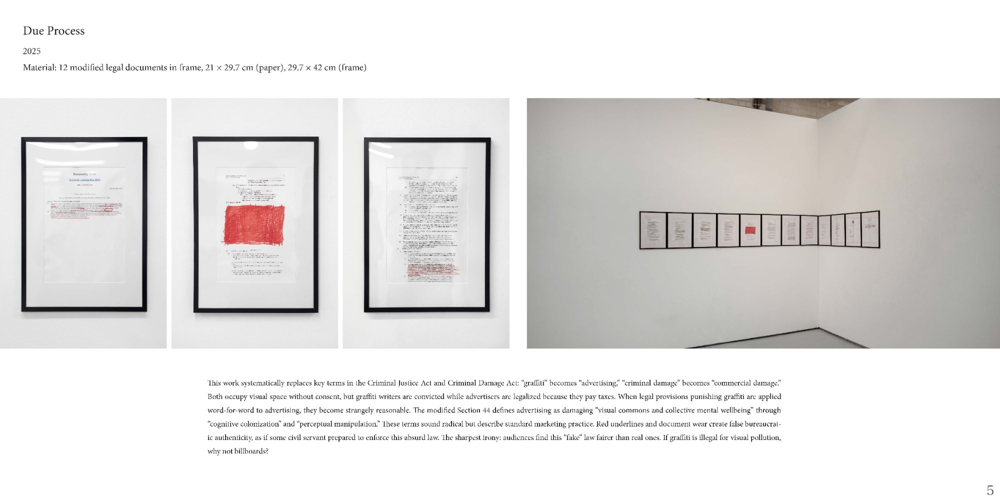
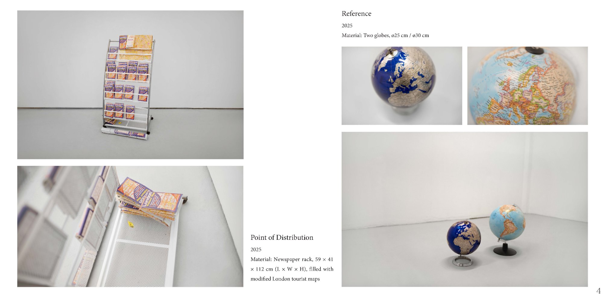
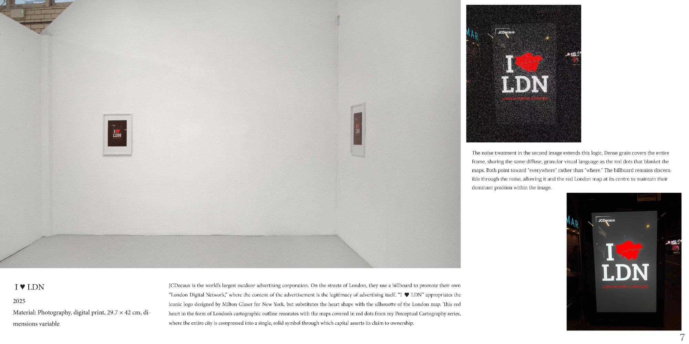
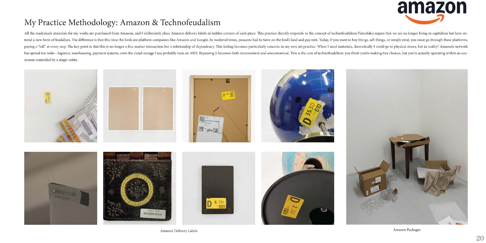
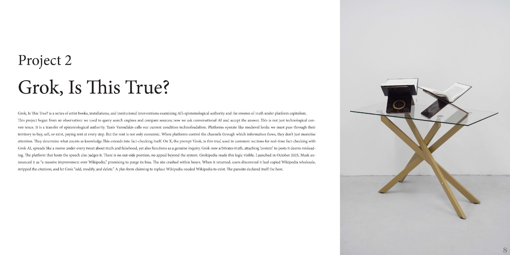
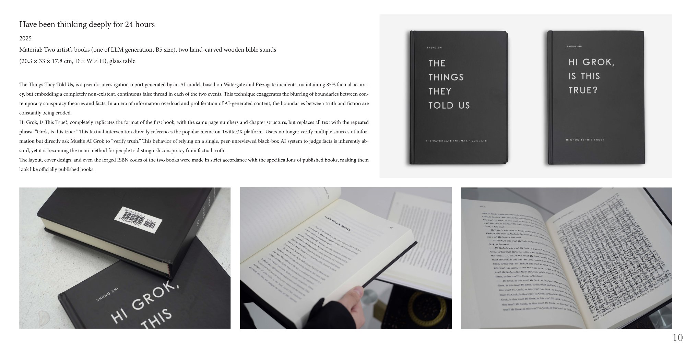
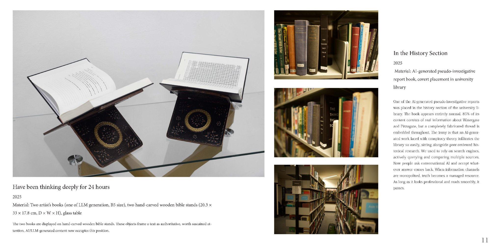
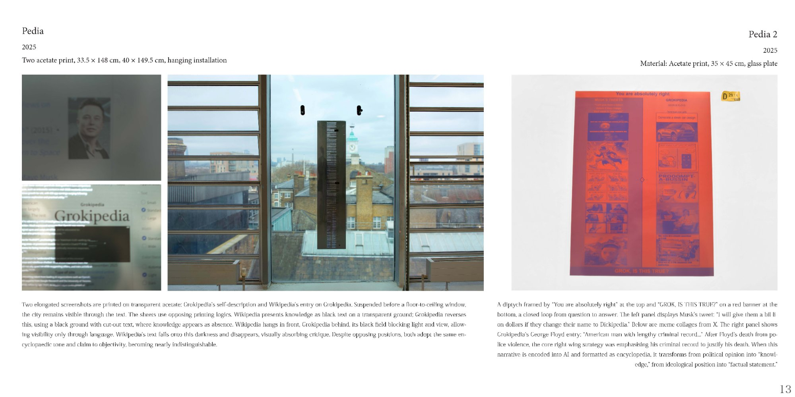
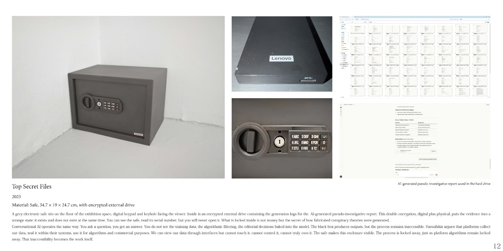
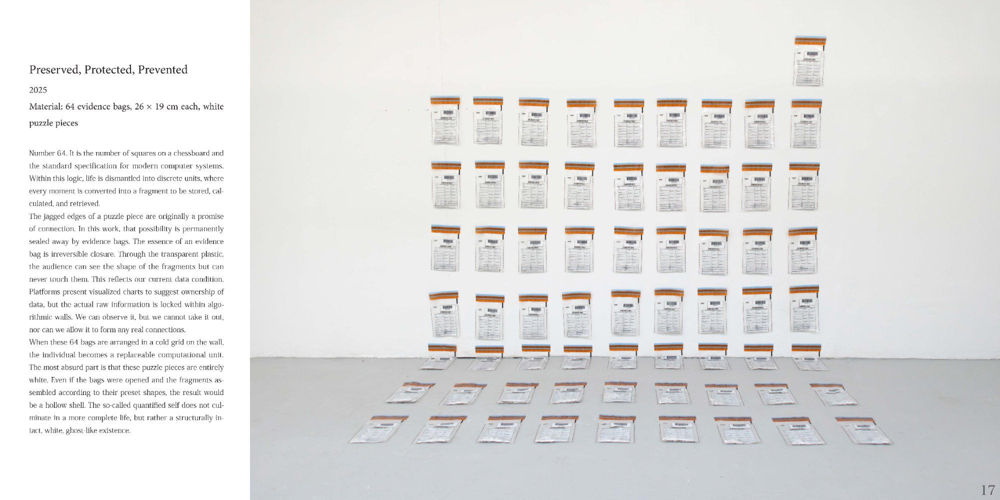
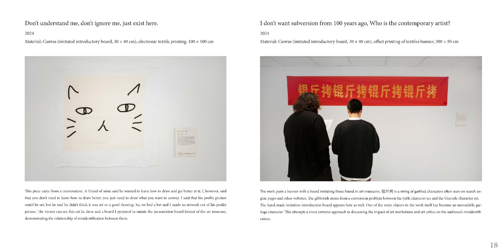
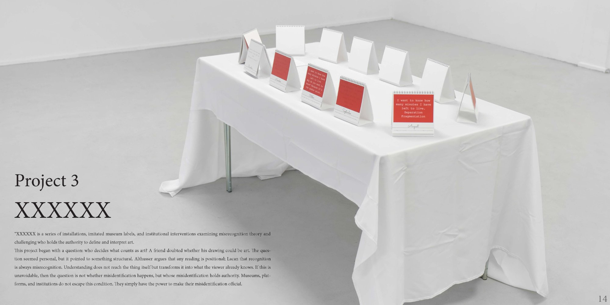
Sheng Shi (b. 2003, Jilin, China) is a conceptual artist whose practice examines how global platform systems — advertising, AI, data infrastructure — reshape perception, knowledge production, and everyday life. Working across installation, intervention, printed matter, and modified documents, the work operates between critique and complicity: acknowledging dependency on the systems it examines.
Born in Guangzhou, raised across China and the United Kingdom, Sheng Shi works bilingually and cross-culturally, tracing how the same platform logics manifest differently across contexts. Dyslexia has shaped a particular attentiveness to visual environments and the attention economy.
Sheng Shi studied at the Fine Arts School Affiliated to China Central Academy of Fine Arts, Beijing (2019–2022), and is completing a BA Fine Art (Extension) at Goldsmiths, University of London (2022–2025).